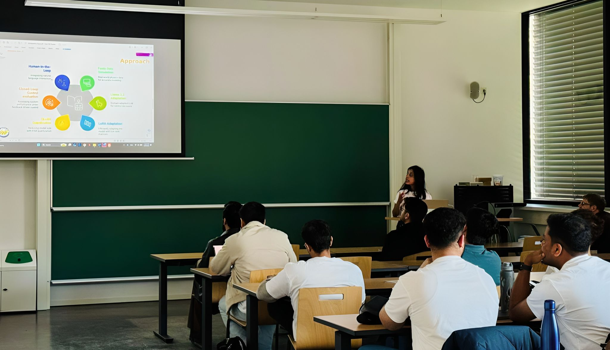
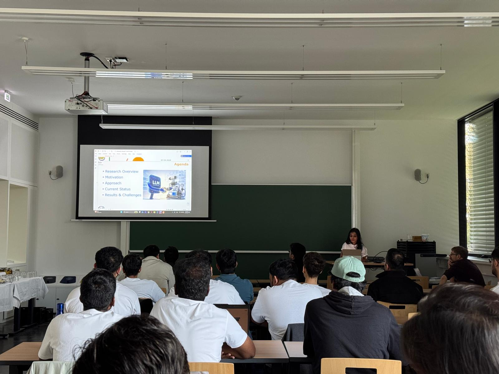

MSc Artificial Intelligence @ BTU Cottbus. I design LLM agents, RAG pipelines, and fine-tuned models. Turning research into production-grade AI.

I'm Vidyashree, an MSc AI student at Brandenburg University of Technology, focused on LLM agents, RAG architecture, and fine-tuning.
My current work centers on bringing language models into industrial control, using LoRA/QLoRA-adapted Llama 3.2 to make hydraulic process systems adaptive and natural-language driven.
I believe in "true speed is predictable, secure, and reliable execution". Production-grade AI that works, not just demos.
Replacing rule-based PID and C++ HTTP control logic with adaptive AI decision-making. Fine-tuned Llama 3.2 3B Instruct with LoRA/QLoRA on hybrid real + physics-informed simulated data (20 sensor variables, 5s sampling). Closed-loop evaluation on level + temperature control.
Pharma analysts waste hours manually tracking competitor trial activity across public registries. This pipeline fetches live clinical trial data via public APIs (using ClinicalTrials.gov as the data source), runs it through Gemini AI to extract structured intelligence including phase, purpose, geography and organization, and surfaces it in a filterable dashboard. Analysts can instantly see where competitors are running trials, whether markets are still exploring (observational) or validating (interventional), and which geographies are heating up. Being evolved into an autonomous multi-agent monitoring system. See the live demo below.
Building an end-to-end AI pipeline for pharma competitive intelligence. Fetches live trial data, extracts insights with Gemini AI, and presents them in a Streamlit dashboard. Evolving into a multi-agent system with Airflow and LangGraph.
Presented 5-min thesis pitch at BTU Cottbus-Senftenberg, organized by Dr. Mahdi Taheri.
Built a tool-augmented agent on Qwen2.5-Coder-32B with dynamic tool calling, deployed as a Gradio app on Hugging Face Spaces.
Scalable RAG pipeline with semantic search over enterprise documents.
Began LLM-driven adaptive control research at BTU's Reliable & Secure Systems lab.
Started Master's program; transitioning from enterprise BI/ETL into AI engineering.
Fetches live clinical trial data from ClinicalTrials.gov, summarizes with Gemini AI, and displays in an interactive dashboard with world map, filters, and charts.
Tool-augmented agent on Qwen2.5-Coder-32B with dynamic tool calling, deployed as a Gradio app on Hugging Face Spaces.
Semantic search + LLM reasoning over unstructured enterprise documents using Chroma, RecursiveCharacterTextSplitter, and Gemini 2.5 Flash Lite.
Natural-language to SPARQL conversion with entity linking and Wikidata knowledge graph traversal.
Domain-specific Named Entity Recognition fine-tuned on industrial maintenance logs and technical documents.
Facial Emotion Recognition enhanced with Convolutional Block Attention Module for mood-aware applications.

5-minute research pitch covering motivation (control gap in industrial fluid systems), approach (Llama 3.2 + LoRA/QLoFA + closed-loop control), and current results: 92.8% accuracy on temperature control, 57.8% on level control across 689 decisions.
Open to AI/ML & LLM Engineer roles in Germany or remote-friendly EU teams. Always happy to chat about agents, RAG, and production AI.